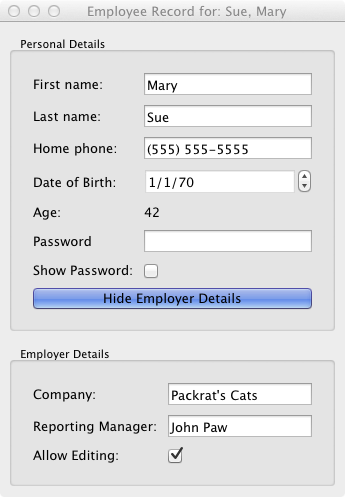

Mary Sue tutorial¶
This tutorial shows how we can build more complex and dynamic user interfaces based on Enaml. It introduces the concepts of constraints and validators. It sets up a GUI to edit employee details.
Here is the Enaml file (download here):
#------------------------------------------------------------------------------
# Copyright (c) 2013, Nucleic Development Team.
# All rights reserved.
#------------------------------------------------------------------------------
from enaml.layout.api import vertical, horizontal, align, spacer, vbox
from enaml.widgets.api import (
Window, Label, Field, Form, DateSelector, CheckBox, GroupBox, Container,
PushButton
)
from phone_validator import PhoneNumberValidator
enamldef EmployeeForm(Form):
attr employee
attr show_employer: bool = True
Label:
text = "First name:"
Field:
text := employee.first_name
Label:
text = "Last name:"
Field:
text := employee.last_name
Label:
text = "Home phone:"
Field:
validator = PhoneNumberValidator()
text << '(%s) %s-%s' % employee.phone
text ::
match = validator.proper.match(text)
if match:
area = match.group(1)
prefix = match.group(2)
suffix = match.group(3)
employee.phone = tuple(map(int, (area, prefix, suffix)))
Label:
text = 'Date of Birth:'
DateSelector:
date := employee.dob
Label:
text = 'Age:'
Label:
text << str(employee.age)
Label:
text = 'Password:'
Field:
echo_mode << 'password' if not pw_cb.checked else 'normal'
text :: print 'Password:', text
Label:
text = 'Show Password:'
CheckBox: pw_cb:
checked = False
Label:
pass
PushButton: btn:
checked := show_employer
checkable = True
text << ('Hide' if show_employer else 'Show') + ' Employer Details'
enamldef EmployerForm(Form):
attr employer
Label:
text = "Company:"
Field:
text << employer.company_name
enabled << en_cb.checked
Label:
text = "Reporting Manager:"
Field:
text << "%s %s" % (employer.first_name, employer.last_name)
enabled << en_cb.checked
Label:
text = "Allow Editing:"
CheckBox: en_cb:
checked = True
enamldef EmployeeView(Window): main:
attr employee
title << "Employee Record for: %s, %s" % (employee.last_name,
employee.first_name)
Container:
constraints << [
vertical(
top, top_box, btm_box.when(btm_box.visible), spacer, bottom
),
horizontal(left, spacer.flex(), top_box, spacer.flex(), right),
horizontal(left, spacer.flex(), btm_box, spacer.flex(), right),
align('midline', top_form, btm_form),
]
GroupBox: top_box:
share_layout = True
title = "Personal Details"
EmployeeForm: top_form:
share_layout = True
# We access the employee object through the identifier
# 'main' here, because the EmployeeForm also has an
# 'employee' attribute declared, and that would be
# found first.
employee = main.employee
GroupBox: btm_box:
share_layout = True
title = "Employer Details"
visible << top_form.show_employer
EmployerForm: btm_form:
share_layout = True
employer << employee.boss
Here is the Python code (download here):
#------------------------------------------------------------------------------
# Copyright (c) 2013, Nucleic Development Team.
# All rights reserved.
#------------------------------------------------------------------------------
import datetime
from atom.api import Atom, Str, Range, Bool, Value, Int, Tuple, observe
import enaml
from enaml.qt.qt_application import QtApplication
class Person(Atom):
""" A simple class representing a person object.
"""
last_name = Str()
first_name = Str()
age = Range(low=0)
dob = Value(datetime.date(1970, 1, 1))
debug = Bool(False)
@observe('age')
def debug_print(self, change):
""" Prints out a debug message whenever the person's age changes.
"""
if self.debug:
templ = "{first} {last} is {age} years old."
s = templ.format(
first=self.first_name, last=self.last_name, age=self.age,
)
print s
class Employer(Person):
""" An employer is a person who runs a company.
"""
# The name of the company
company_name = Str()
class Employee(Person):
""" An employee is person with a boss and a phone number.
"""
# The employee's boss
boss = Value(Employer)
# The employee's phone number as a tuple of 3 ints
phone = Tuple(Int())
# This method will be called automatically by atom when the
# employee's phone number changes
def _phone_changed(self, val):
print 'received new phone number for %s: %s' % (self.first_name, val)
if __name__ == '__main__':
# Create an employee with a boss
boss_john = Employer(
first_name='John', last_name='Paw', company_name="Packrat's Cats",
)
employee_mary = Employee(
first_name='Mary', last_name='Sue', boss=boss_john,
phone = (555, 555, 5555),
)
# Import our Enaml EmployeeView
with enaml.imports():
from employee_view import EmployeeView
app = QtApplication()
# Create a view and show it.
view = EmployeeView(employee=employee_mary)
view.show()
app.start()
EmployeeForm Definition block¶
This block summarizes most of the concepts seen in the previous tutorial. It creates a new enamldef based on the Form widget. Two attributes are exposed in the widget: an employee attribute and a show_employer boolean value that defaults to True. The form itself contains a set of Label widgets with associated Field widgets.
Using validation on fields¶
The "Home phone:" field must be validated to make sure the user can’t insert a phone number that is not valid. The user interface must also signal the user when the current entry is invalid.
A PhoneNumberValidator class implements the validate(...) method of the Validator abstract class. If the validation succeeds the returned value of the validate call is standardized formatted text.
#------------------------------------------------------------------------------
# Copyright (c) 2013, Nucleic Development Team.
# All rights reserved.
#------------------------------------------------------------------------------
import re
from enaml.validator import Validator
class PhoneNumberValidator(Validator):
""" A really dumb phone number validator.
"""
all_digits = re.compile(r'[0-9]{10}$')
dashes = re.compile(r'([0-9]{3})\-([0-9]{3})\-([0-9]{4})$')
proper = re.compile(r'\(([0-9]{3})\)\ ([0-9]{3})\-([0-9]{4})$')
def validate(self, text, component):
match = self.proper.match(text) or self.dashes.match(text)
if match:
area = match.group(1)
prefix = match.group(2)
suffix = match.group(3)
formatted_text = '(%s) %s-%s' % (area, prefix, suffix)
return formatted_text, True
match = self.all_digits.match(text)
if match:
area = text[:3]
prefix = text[3:6]
suffix = text[6:10]
formatted_text = '(%s) %s-%s' % (area, prefix, suffix)
return formatted_text, True
return text, False
In the Field definition, every time the text is updated with a properly validated entry, the employee phone attribute is updated.
Field:
validator = PhoneNumberValidator()
text << '(%s) %s-%s' % employee.phone
text ::
match = validator.proper.match(text)
if match:
area = match.group(1)
prefix = match.group(2)
suffix = match.group(3)
employee.phone = tuple(map(int, (area, prefix, suffix)))
Dynamic interaction with widgets¶
The widget attributes all support the special Enaml operators. One can thus assign the result of arbitrary Python code to interact with the status of the widget:
Label:
text = 'Password:'
Field:
echo_mode << 'password' if not pw_cb.checked else 'normal'
text :: print 'Password:', text
Label:
text = 'Show Password:'
CheckBox: pw_cb:
checked = False
In this example, the user can activate or deactivate the echo_mode of the password Field based on the state of another widget, the password CheckBox. The user can refer to the password CheckBox using the id of the widget.
Visibility is controled with the visible attribute of a widget. In the EmployeeMainView, the btm_box visibility is connected to the top_form.show_employer attribute. Enaml will take care of the related relayout issues. See the constraints section for more information.
The very same pattern is used in the EmployerForm to enable or disable a group of Field widgets baesd on a CheckBox.
Customizing your layout¶
Once you have created the components of your main view, you can assemble them using the differeent containers:
Those widgets take care of aranging the layout of the child widgets using a set of constraints. In this tutorial, the only one that defines constraints is the outer container:
Container:
constraints << [
vertical(
top, top_box, btm_box.when(btm_box.visible), spacer, bottom
),
horizontal(left, spacer.flex(), top_box, spacer.flex(), right),
horizontal(left, spacer.flex(), btm_box, spacer.flex(), right),
align('midline', top_form, btm_form)
]

The constraints attribute of the Container is populated with a list of constraints. The user expresses how he wants the layout to be aranged:
- a vertical constraint on the widgets named by id’s.
- two horizontal constraints on the widgets with spacers
- a special constraint on the two forms that aligns their midline, the line between the two columns of the form. Note that we refer to the id’s of the forms and not the ones of the GroupBox. GroupBoxes do not have a midline attribute.
Using spacer, you can add empty space between widgets. This space could either be fixed space or flexible when using spacer.flex(). In this case, the spacer will expose a weaker preference for being the fixed value. The following set of constraints will make the first form compressed horizontally by setting the target fixed size of the spacer to 50 pixels:
Container:
constraints << [
vertical(
top, top_box, btm_box.when(btm_box.visible), spacer, bottom
),
horizontal(left, spacer(50).flex(), top_box, spacer(50).flex(), right),
horizontal(left, spacer.flex(), btm_box, spacer.flex(), right),
align('midline', top_form, btm_form)
]
Specialized containers can expose particular ways of managing their layout. The Form exposes a midline attribute that can be used to align the midline of different forms together. If it was not activated, the layout would have been:
Tweaking the layout¶
Enaml provides many different ways of tweaking the constraints to make sure the layout engine gives you exactly what you want.
A user can give a weight to each constraint. Valid weights are: 'weak', 'medium', 'strong' and 'ignore'. If the user wants to make the width of the container equal to 233 pixels but with some latitude, he could add the following constraint:
Container:
constraints << [
vertical(
top, top_box, btm_box.when(btm_box.visible), spacer, bottom
),
horizontal(left, spacer.flex(), top_box, spacer.flex(), right),
horizontal(left, spacer.flex(), btm_box, spacer.flex(), right),
align('midline', top_form, btm_form),
(width == 233) | 'weak'
]
The Container exposes some content related attributes to the constraints system: width, height, left, right, bottom, top, v_center and h_center. They can be used as shown in the previous example.
Depending on the flexiblity you need, you might want to use some of the other layout function like hbox or vbox. You could have created a layout pretty close to this one with the following constraints:
Container:
constraints = [
vbox(top_box, btm_box.when(btm_box.visible)),
align('midline', top_form, btm_form)
]
The advantage of using hbox and vbox is that you can nest them. The vertical and horizontal functions cannot be nested.
The set of constraints can be nested by using the hbox, vbox or by providing constraints of containers that belongs to the outer container. The GroupBox provides some internal constraints regarding its size to allow the title to be properly displayed. A Form automatically lays out the widgets in two columns. If the user wanted to have an EmployerForm laid out in two horizontal rows in place of two columns, he could have edited the EmployerForm with the following set of changes:
- update the base class to be a Container instead of a Form
- provide a list of constraints for the desired layout
- remove the alignment constraint in the main container
enamldef EmployerForm(Container):
attr employer
constraints = [
vbox(
hbox(cmp_lbl, mng_lbl, edit_lbl),
hbox(cmp_fld, mgn_fld, en_cb),
),
cmp_lbl.width == cmp_fld.width,
mng_lbl.width == mgn_fld.width,
edit_lbl.width == en_cb.width,
]